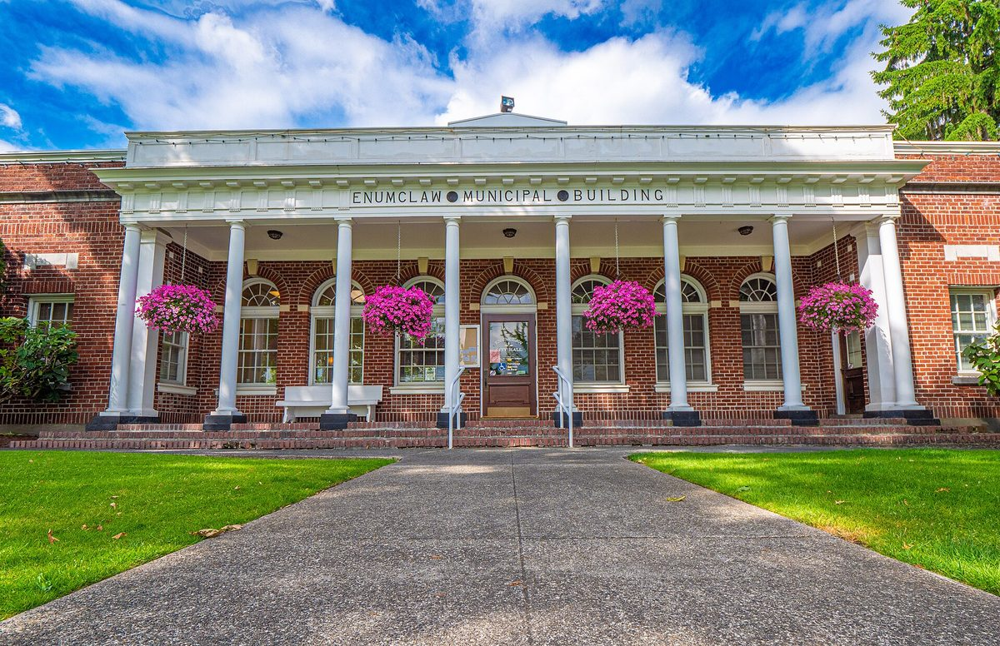

미국 이넘클로시, 시 저수지 위에 전력회사 커뮤니티 태양광 유치…지분 82개 모두 소득 기준 가구에

설비는 전력회사 PSE가 비용을 대 짓고 소유, 시는 부지 사용료로 연 약 6,300달러…가입 가구는 지분당 월 10~20달러 요금 공제 예상, 공사는 2027년 초 예정
미국 워싱턴주 이넘클로시가 시 상수도 저수지 위를 지역 전력회사 퓨젓사운드에너지(PSE)의 커뮤니티 태양광 부지로 내주기로 하고, 시의회가 10월 28일 이 협력 결의안을 승인했다. 시가 2024년 먼저 PSE에 협력을 제안했고 PSE가 2025년 이 부지를 승인했으며, 패널 공사는 2027년 초 시작될 예정이다. 설비는 PSE가 비용을 모두 대 짓고 소유하며, 시는 부지를 내준 대가로 해마다 약 6,300달러를 받는다. 발전이 시작되면 모두 82개 지분이 열리는데 전부 소득 요건을 맞춘 가구에만 돌아가고, 가구당 최대 2지분을 신청해 승인되면 지분당 월 10~20달러로 예상되는 요금 공제를 받는다. 공제액은 실제 발전량에 따라 달라 여름에 크고 겨울에 작다. 킹·피어스·키티타스·스캐짓 카운티에 있는 다른 PSE 커뮤니티 태양광은 지분을 하나에 20달러씩 내고 사야 하며, 이런 일반 가입자는 절감액으로 가입비를 메우기 어렵다는 점이 함께 지적됐다.
시민에너지 관점
네덜란드는 2014년부터 이른바 '우편번호 장미' 제도로, 태양광 설비 주변 우편번호 구역의 주민이 협동조합을 꾸려 남의 지붕 위 패널을 함께 소유하고 그 몫만큼 에너지세를 돌려받게 했다. 지분을 저소득 가구에만 돌린 이넘클로의 설계는 에너지 기본권 면에서 눈여겨볼 만하지만, 공공부지에 선 설비의 주인은 민간 전력회사이고 주민은 요금 공제를 받는 가입자에 머문다. 저수지 같은 공공시설은 시민의 자산인 만큼 그 위의 발전 설비도 주민과 지자체가 함께 소유해야 연 수천 달러의 사용료를 넘는 수익과 결정권이 지역에 남는다. 우리 지자체도 저수지·정수장·공영주차장 같은 공공부지를 내줄 때 저소득 가구 몫을 지키면서 주민이 출자해 주인이 되는 길을 함께 열어야 한다.
출처: Enumclaw Courier-Herald 2026-11-03 Raymond Still 원문 보기
米イナムクロー市、市の貯水池上に電力会社のコミュニティ太陽光を誘致…82口の持ち分はすべて所得要件世帯に
設備は電力会社PSEが費用を負担して建設・所有、市は用地使用料として年約6,300ドル…加入世帯は1口当たり月10～20ドルの料金控除見込み、工事は2027年初めの予定
米ワシントン州イナムクロー市は、市の上水道貯水池の上を地域電力会社ピュージェット・サウンド・エナジー（PSE）のコミュニティ太陽光の用地として提供することを決め、市議会が10月28日にこの協力決議を承認した。市が2024年にPSEへ協力を持ちかけ、PSEが2025年にこの用地を承認しており、パネル工事は2027年初めに始まる予定だ。設備はPSEが費用を全額負担して建設・所有し、市は用地提供の対価として毎年約6,300ドルを受け取る。発電が始まると計82口の持ち分が募集されるが、すべて所得要件を満たす世帯に限られ、1世帯最大2口まで申し込め、承認されれば1口当たり月10～20ドルと見込まれる料金控除を受けられる。控除額は実際の発電量によって変わり、夏に大きく冬に小さい。キング・ピアース・キティタス・スカジット各郡にあるほかのPSEコミュニティ太陽光では持ち分を1口20ドルずつ購入する必要があり、こうした一般加入者は節約額で加入費を賄うのは難しいことも指摘された。
市民エネルギーの視点
オランダは2014年から「郵便番号のバラ」と呼ばれる制度で、太陽光設備周辺の郵便番号区域の住民が協同組合をつくって他人の屋根の上のパネルを共同所有し、その持ち分に応じてエネルギー税の還付を受けられるようにした。持ち分を低所得世帯に限ったイナムクローの設計はエネルギー基本権の面で注目に値するが、公共用地に建つ設備の持ち主は民間電力会社で、住民は料金控除を受ける加入者にとどまる。貯水池のような公共施設は市民の資産である以上、その上の発電設備も住民と自治体が共に所有してこそ、年数千ドルの使用料を超える収益と決定権が地域に残る。韓国の自治体も貯水池・浄水場・公営駐車場といった公共用地を提供する際、低所得世帯の取り分を守りつつ、住民が出資して持ち主になる道を併せて開くべきだ。
出典: イナムクロー・クーリエ・ヘラルド 2026-11-03 レイモンド・スティル 原文を読む
美国伊纳姆克洛市在市属水库上方引入电力公司社区太阳能…82份份额全部给予符合收入条件的家庭
设施由电力公司PSE出资建设并拥有，市政府每年收取约6,300美元场地使用费…参与家庭预计每份每月获得10至20美元电费抵扣，工程预计2027年初开工
美国华盛顿州伊纳姆克洛市决定将市属供水水库上方提供给当地电力公司普吉特湾能源公司（PSE）作为社区太阳能场址，市议会于10月28日批准了相关合作决议。该市于2024年主动向PSE提出合作，PSE于2025年批准了这一场址，面板工程预计2027年初开工。设施由PSE全额出资建设并拥有，市政府作为提供场地的回报每年获得约6,300美元。发电开始后将开放共82份份额，全部只面向符合收入条件的家庭，每户最多可申请2份，获批后每份每月预计可获得10至20美元的电费抵扣。抵扣金额随实际发电量变化，夏季较多、冬季较少。金县、皮尔斯县、基蒂塔斯县和斯卡吉特县的其他PSE社区太阳能项目则要求用户以每份20美元购买份额，报道同时指出，这类普通用户节省的电费难以抵消认购费用。
市民能源视角
荷兰自2014年起实行所谓"邮编玫瑰"制度，让太阳能设施周边邮编区域的居民组建合作社，共同拥有他人屋顶上的面板，并按所占份额获得能源税返还。伊纳姆克洛把份额只留给低收入家庭的设计，从能源基本权的角度值得关注，但建在公共用地上的设施归民营电力公司所有，居民只是领取电费抵扣的用户。水库这样的公共设施是市民的资产，其上的发电设施也应由居民和地方政府共同拥有，才能让超出每年几千美元使用费的收益和决策权留在本地。韩国的地方政府在提供水库、净水厂、公共停车场等公共用地时，也应在保障低收入家庭份额的同时，为居民出资成为主人开辟道路。
来源: 伊纳姆克洛信使先驱报 2026-11-03 雷蒙德·斯蒂尔 查看原文
Enumclaw, Washington, hosts utility community solar on a city reservoir; all 82 shares reserved for income-eligible households
Utility PSE will build, pay for and own the array while the city collects about $6,300 a year for the site; subscribers are expected to get $10 to $20 a month in bill credits per share, with construction planned for early 2027
The city of Enumclaw in Washington state will let regional utility Puget Sound Energy (PSE) use the top of a city water reservoir as a community solar site, after the city council approved a partnership resolution on October 28. The city first approached PSE in 2024, PSE approved the site in 2025, and panel construction is expected to begin in early 2027. PSE will cover the full cost of building the array and will own it, while the city receives about $6,300 a year in return for the use of the space. Once the panels are running, a total of 82 shares will open, all of them reserved for households that meet income requirements; each household may apply for up to two shares and, if approved, receive a monthly bill credit estimated at $10 to $20 per share. Credits depend on actual output, so they will be larger in summer than in winter. At other PSE community solar sites in King, Pierce, Kittitas and Skagit counties customers must buy shares at $20 each, and it was also noted that for these paying subscribers the savings are unlikely to cover the subscription cost.
Citizen Energy View
Since 2014 the Netherlands has run the so-called postcode rose scheme, under which residents in the postcode areas around a solar installation form a cooperative, jointly own panels on someone else's roof and receive an energy tax refund in proportion to their share. Enumclaw's decision to reserve every share for lower-income households deserves attention as a matter of the right to energy, but the array on public land belongs to a private utility, and residents remain subscribers who receive bill credits. Public facilities such as reservoirs are citizens' assets, so the generating equipment on top of them should be owned jointly by residents and local government if income beyond a few thousand dollars a year in rent, and the power to decide, are to stay in the community. Korean local governments, too, should protect a share for low-income households when they offer public land such as reservoirs, water treatment plants and municipal car parks, while also opening a path for residents to invest and become owners.
Source: Enumclaw Courier-Herald 2026-11-03 Raymond Still Read the original